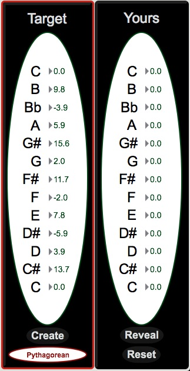

bitSuite
Main Window
Interface - Main Window
The interface for bitTemper consists of two windows. The main window includes the familiar audio setup panel, keyboards, and tuning strip from bitDyad, as well as a Target and Yours temperament panel. To get started, we’ll explore the workflow of the main window.

Audio Setup
To engage the audio engine, simply click the speaker. Be sure that the red triangle, corresponding to gain, is well above zero.

Target, Reveal, Reset
Before diving into the bitTemper workflow, it is important to understand the organization and purpose of the Target panel. The Target panel indicates what historical tuning bitTemper is currently using. By default, the target is Pythagorean, which can be changed by clicking on the drop-down menu below the Target column. The specific tuning for the selected temperament will be listed in the Target panel as cents offset from equal-tempered tuning for each note (so, B is 9.8 cents sharp to an equal-tempered B, and the D# 5.9 cents flat to ET, in the image below).

As you begin to tune your keyboard, the goal is to bring each pitch from ET to the target offset by ear. The “Yours” column will show the results of your efforts only after hitting the “Reveal” button.
Note: In the “Temperament” menu (below), the bottom 6 temperaments are built from the ground up using “ratios” tool rather than the “commas” tool. You will be able to dive into these differences by clicking on the “Create” button.

Workflow
bitTemper is designed to be used with a MIDI keyboard to approximate the craft of tuning an actual harpsichord. The user should one hand to play notes and intervals on the keyboard while using their other hand to click and drags to tune a selected note. This allows the user to play multiple notes at a time, estimate target intervals, then click to reveal how close they are.
Tuning in bitTemper
-
To begin, play a few notes on the MIDI keyboard. Corresponding notes will light up on the lower manual. These pitches will be in “Target Tuning” mode (which by default is Pythagorean: This can be changed in the drop-down menu in the Target column).
-
Select a note on the upper manual inside the blue ‘Temperament’ box. This is where the user places their virtual tuning hammer.
-
Toggle the red button from Target Tuning to Your Tuning. You can also do this with the t/y keys on your computer keyboard. You will see the red box shift from the “Target Tuning” to “Your Tuning” columns.
-
Play the keyboard again. You will now be playing in “Your Tuning,” which will be ET until you begin making changes.
-
Click and drag across the tuning bar (no need to hold shift as in bitDyad) while playing the selected note on your MIDI keyboard. You should hear the selected note rising or falling in pitch.
-
Continue steps 2-5 for any number of keys within the blue “Temperament” box. Feel free to toggle between “Target” and “Yours” using t/y to hear if you are approaching the target tuning for each note.
-
When you are ready, click “Reveal” in the “Yours” column to see how close your efforts have brought you to the initial tuning.
-
Keep tuning, or hit “Reset” and try again!
Some things to note while tuning:
• When “Target” is toggled, the user will be playing in the selected historical tuning. When the toggle reads “Yours,” the user will be playing and editing the tunable ET temperament. The red box around the “Target” or “Yours” columns will indicate which of the two tunings the user is playing.

• The Target Tuning applies to all octaves on the keyboard. Your “Temperament” tuning will only apply to those notes within the octave temperament box. To complete your tuning, tune the subsequent octaves above and below the temperament octave, just as you would with an actual keyboard. For the octaves outside the temperament octave, you can still listen and compare Your Tuning with the Target Tuning, they just won’t appear in the “Yours” column when you hit “Reveal.”
• Any changes made while tuning will not appear in the “Yours” column until the user hits “Reveal.”
• Tuning temperaments by ear is an art and a science, but not a mystery! There are many well-documented guides out there on the subject: As a starting point, we recommend renowned Australian harpsichord maker Carey Beebe, who maintains an excellent collection of resources on historical tunings on his website. Follow his links to Resources/Technical Library/Tuning Systems to read about tuning to various Targets by ear.